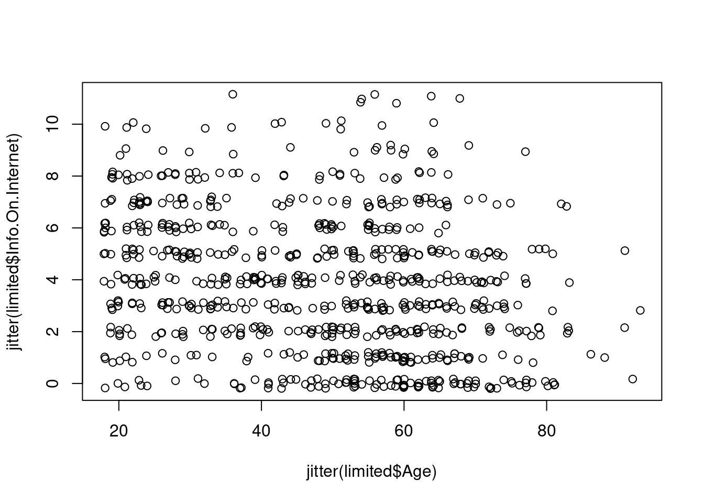

mvt <- read.csv("/cloud/project/analyticsedge/Datasets/DatasetsUnit1/mvtWeek1.csv")The Analytics Edge: Assignment 1 - An Introduction to Analytics
The following link will lead you to the assignment on the edX website: https://learning.edx.org/course/course-v1:MITx+15.071x+2T2020/block-v1:MITx+15.071x+2T2020+type@sequential+block@a5915d0492804dada5feb1926ba5be7a
An Analytical Detective
There are two main types of crimes: violent crimes, and property crimes. In this problem, we’ll focus on one specific type of property crime, called “motor vehicle theft” (sometimes referred to as grand theft auto). This is the act of stealing, or attempting to steal, a car. In this problem, we’ll use some basic data analysis in R to understand the motor vehicle thefts in Chicago.
Please download the file mvtWeek1.csv for this problem (do not open this file in any spreadsheet software before completing this problem because it might change the format of the Date field).
Start:
Read the dataset mvtWeek1.csv into R, using the read.csv function, and call the data frame “mvt”.
1.1: How many rows of data (observations) are in this dataset?
Answer: 191641
nrow(mvt)[1] 1916411.2: How many variables are in this dataset?
Answer: 11
ncol(mvt)[1] 111.3: Using the “max” function, what is the maximum value of the variable “ID”?
Answer: 9181151
max(mvt$ID)[1] 91811511.4: What is the minimum value of the variable “Beat”?
Answer: 111
min(mvt$Beat)[1] 1111.5: How many observations have value TRUE in the Arrest variable (this is the number of crimes for which an arrest was made)?
Answer: 15536
sum(mvt$Arrest)[1] 155361.6: How many observations have a LocationDescription value of ALLEY?
Answer: 2308
sum(mvt$LocationDescription == "ALLEY")[1] 23082.1: In what format are the entries in the variable Date?
Answer: Month/Day/Year Hour:Minute
mvt$Date[1][1] "12/31/12 23:15"2.2: What is the month and year of the median date in our dataset? Enter your answer as “Month Year”, without the quotes.
Answer: May 2006
DateConvert = as.Date(strptime(mvt$Date, "%m/%d/%y %H:%M"))
#summary(DateConvert)
median(DateConvert)[1] "2006-05-21"2.3: In which month did the fewest motor vehicle thefts occur?
Answer: February
mvt$Month = months(DateConvert)
mvt$Weekday = weekdays(DateConvert)
mvt$Date = DateConvert
table(mvt$Month)
April August December February January July June March
15280 16572 16426 13511 16047 16801 16002 15758
May November October September
16035 16063 17086 16060 2.4: On which weekday did the most motor vehicle thefts occur?
Answer: Friday
table(mvt$Weekday)
Friday Monday Saturday Sunday Thursday Tuesday Wednesday
29284 27397 27118 26316 27319 26791 27416 2.5: Which month has the largest number of motor vehicle thefts for which an arrest was made?
Answer: January
table(mvt$Month, mvt$Arrest)
FALSE TRUE
April 14028 1252
August 15243 1329
December 15029 1397
February 12273 1238
January 14612 1435
July 15477 1324
June 14772 1230
March 14460 1298
May 14848 1187
November 14807 1256
October 15744 1342
September 14812 12483.1.1: In general, does it look like crime increases or decreases from 2002 - 2012?
Answer: Decreases
3.1.2: In general, does it look like crime increases or decreases from 2005 - 2008?
Answer: Decreases
3.1.3: In general, does it look like crime increases or decreases from 2009 - 2011?
Answer: Increases
hist(mvt$Date, breaks=100)
3.2: Does it look like there were more crimes for which arrests were made in the first half of the time period or the second half of the time period?
Answer: First half
boxplot(Date ~ Arrest, data = mvt)
3.3: For what proportion of motor vehicle thefts in 2001 was an arrest made?
Answer: 0.1041173
tapply(mvt$Arrest, mvt$Year, mean) 2001 2002 2003 2004 2005 2006 2007
0.10411728 0.11278195 0.10794261 0.10040327 0.09269595 0.08087961 0.08487395
2008 2009 2010 2011 2012
0.07061267 0.06903920 0.04523456 0.03996930 0.03902924 3.4: For what proportion of motor vehicle thefts in 2007 was an arrest made?
Answer: 0.08487395
tapply(mvt$Arrest, mvt$Year, mean) 2001 2002 2003 2004 2005 2006 2007
0.10411728 0.11278195 0.10794261 0.10040327 0.09269595 0.08087961 0.08487395
2008 2009 2010 2011 2012
0.07061267 0.06903920 0.04523456 0.03996930 0.03902924 3.5: For what proportion of motor vehicle thefts in 2012 was an arrest made?
Answer: 0.03902924
tapply(mvt$Arrest, mvt$Year, mean) 2001 2002 2003 2004 2005 2006 2007
0.10411728 0.11278195 0.10794261 0.10040327 0.09269595 0.08087961 0.08487395
2008 2009 2010 2011 2012
0.07061267 0.06903920 0.04523456 0.03996930 0.03902924 4.1: Which locations are the top five locations for motor vehicle thefts, excluding the “Other” category?
Answer: STREET, PARKING LOT/GARAGE(NON.RESID.), ALLEY, GAS STATION, DRIVEWAY - RESIDENTIAL
sort(table(mvt$LocationDescription), decreasing = TRUE)
STREET
156564
PARKING LOT/GARAGE(NON.RESID.)
14852
OTHER
4573
ALLEY
2308
GAS STATION
2111
DRIVEWAY - RESIDENTIAL
1675
RESIDENTIAL YARD (FRONT/BACK)
1536
RESIDENCE
1302
RESIDENCE-GARAGE
1176
VACANT LOT/LAND
985
VEHICLE NON-COMMERCIAL
817
SIDEWALK
462
CHA PARKING LOT/GROUNDS
405
AIRPORT/AIRCRAFT
363
POLICE FACILITY/VEH PARKING LOT
266
PARK PROPERTY
255
SCHOOL, PUBLIC, GROUNDS
206
APARTMENT
184
SPORTS ARENA/STADIUM
166
CTA GARAGE / OTHER PROPERTY
148
COMMERCIAL / BUSINESS OFFICE
126
HOTEL/MOTEL
124
SCHOOL, PUBLIC, BUILDING
114
HOSPITAL BUILDING/GROUNDS
101
GROCERY FOOD STORE
80
CHURCH/SYNAGOGUE/PLACE OF WORSHIP
56
RESTAURANT
49
GOVERNMENT BUILDING/PROPERTY
48
COLLEGE/UNIVERSITY GROUNDS
47
CAR WASH
44
CONSTRUCTION SITE
35
SMALL RETAIL STORE
33
OTHER RAILROAD PROP / TRAIN DEPOT
28
AIRPORT EXTERIOR - NON-SECURE AREA
24
SCHOOL, PRIVATE, GROUNDS
23
VEHICLE-COMMERCIAL
23
DEPARTMENT STORE
22
HIGHWAY/EXPRESSWAY
22
NURSING HOME/RETIREMENT HOME
21
TAXICAB
21
MOVIE HOUSE/THEATER
18
RESIDENCE PORCH/HALLWAY
18
BAR OR TAVERN
17
WAREHOUSE
17
FACTORY/MANUFACTURING BUILDING
16
SCHOOL, PRIVATE, BUILDING
14
TAVERN/LIQUOR STORE
14
AIRPORT PARKING LOT
11
AIRPORT VENDING ESTABLISHMENT
10
ATHLETIC CLUB
9
DRUG STORE
8
OTHER COMMERCIAL TRANSPORTATION
8
BANK
7
CONVENIENCE STORE
7
FOREST PRESERVE
6
AIRPORT TERMINAL UPPER LEVEL - NON-SECURE AREA
5
CHA APARTMENT
5
DAY CARE CENTER
5
FIRE STATION
5
ABANDONED BUILDING
4
AIRPORT BUILDING NON-TERMINAL - NON-SECURE AREA
4
BARBERSHOP
4
LAKEFRONT/WATERFRONT/RIVERBANK
4
LIBRARY
4
SAVINGS AND LOAN
4
BOWLING ALLEY
3
CLEANING STORE
3
MEDICAL/DENTAL OFFICE
3
BRIDGE
2
COLLEGE/UNIVERSITY RESIDENCE HALL
2
CURRENCY EXCHANGE
2
AIRPORT BUILDING NON-TERMINAL - SECURE AREA
1
AIRPORT EXTERIOR - SECURE AREA
1
ANIMAL HOSPITAL
1
APPLIANCE STORE
1
CTA TRAIN
1
JAIL / LOCK-UP FACILITY
1
NEWSSTAND
1 Create a subset of your data, only taking observations for which the theft happened in one of these five locations, and call this new data set “Top5”:
Top5 <- subset(mvt, mvt$LocationDescription == "STREET"
| mvt$LocationDescription == "PARKING LOT/GARAGE(NON.RESID.)"
| mvt$LocationDescription == "ALLEY"
| mvt$LocationDescription == "GAS STATION"
| mvt$LocationDescription == "DRIVEWAY - RESIDENTIAL")4.2: How many observations are in Top5?
Answer: 177510
nrow(Top5)[1] 1775104.3: One of the locations has a much higher arrest rate than the other locations. Which is it?
Answer: Gas Station (Check percentages)
Top5$LocationDescription = factor(Top5$LocationDescription)
table(Top5$LocationDescription, Top5$Arrest)
FALSE TRUE
ALLEY 2059 249
DRIVEWAY - RESIDENTIAL 1543 132
GAS STATION 1672 439
PARKING LOT/GARAGE(NON.RESID.) 13249 1603
STREET 144969 115954.4: On which day of the week do the most motor vehicle thefts at gas stations happen?
Answer: Saturday
table(Top5$LocationDescription == "GAS STATION", Top5$Weekday)
Friday Monday Saturday Sunday Thursday Tuesday Wednesday
FALSE 26746 25008 24917 24220 24956 24527 25025
TRUE 332 280 338 336 282 270 2734.5: On which day of the week do the fewest motor vehicle thefts in residential driveways happen?
Answer: Saturday
table(Top5$LocationDescription == "DRIVEWAY - RESIDENTIAL", Top5$Weekday)
Friday Monday Saturday Sunday Thursday Tuesday Wednesday
FALSE 26821 25033 25053 24335 24975 24554 25064
TRUE 257 255 202 221 263 243 234Stock Dynamics
A stock market is where buyers and sellers trade shares of a company, and is one of the most popular ways for individuals and companies to invest money. The size of the world stock market is now estimated to be in the trillions. The largest stock market in the world is the New York Stock Exchange (NYSE), located in New York City. About 2,800 companies are listed on the NYSE. In this problem, we’ll look at the monthly stock prices of five of these companies: IBM, General Electric (GE), Procter and Gamble, Coca Cola, and Boeing. The data used in this problem comes from Infochimps.
Please download the following files: IBMStock.csv, GEStock.csv, ProcterGambleStock.csv, CocaColaStock.csv, BoeingStock.csv (do not open these files in any spreadsheet software before completing this problem because it might change the format of the Date field).
Start:
Read the datasets into R, using the read.csv function, and call the data frames “IBM”, “GE”, “ProcterGamble”, “CocaCola”, and “Boeing”, respectively.
IBM <- read.csv("/cloud/project/analyticsedge/Datasets/DatasetsUnit1/IBMStock.csv")
GE <- read.csv("/cloud/project/analyticsedge/Datasets/DatasetsUnit1/GEStock.csv")
ProcterGamble <- read.csv("/cloud/project/analyticsedge/Datasets/DatasetsUnit1/ProcterGambleStock.csv")
CocaCola <- read.csv("/cloud/project/analyticsedge/Datasets/DatasetsUnit1/CocaColaStock.csv")
Boeing <- read.csv("/cloud/project/analyticsedge/Datasets/DatasetsUnit1/BoeingStock.csv")Before working with these data sets, we need to convert the dates into a format that R can understand. Take a look at the structure of one of the datasets using the str function. Right now, the date variable is stored as a factor. We can convert this to a “Date” object in R by using the following five commands (one for each data set):
IBM$Date = as.Date(IBM$Date, "%m/%d/%y")
GE$Date = as.Date(GE$Date, "%m/%d/%y")
CocaCola$Date = as.Date(CocaCola$Date, "%m/%d/%y")
ProcterGamble$Date = as.Date(ProcterGamble$Date, "%m/%d/%y")
Boeing$Date = as.Date(Boeing$Date, "%m/%d/%y")1.1: Our five datasets all have the same number of observations. How many observations are there in each data set?
Answer: 480
nrow(IBM)[1] 4801.2: What is the earliest year in our datasets?
Answer: 1970
min(IBM$Date)[1] "1970-01-01"1.3: What is the latest year in our datasets?
Answer: 2009
max(IBM$Date)[1] "2009-12-01"1.4: What is the mean stock price of IBM over this time period?
Answer: 144.375
mean(IBM$StockPrice)[1] 144.3751.5: What is the minimum stock price of General Electric (GE) over this time period?
Answer: 9.293636
min(GE$StockPrice)[1] 9.2936361.6: What is the maximum stock price of Coca-Cola over this time period?
Answer: 146.5843
max(CocaCola$StockPrice)[1] 146.58431.7: What is the median stock price of Boeing over this time period?
Answer:
median(Boeing$StockPrice)[1] 44.88341.8: What is the standard deviation of the stock price of Procter & Gamble over this time period?
Answer: 18.19414
sd(ProcterGamble$StockPrice)[1] 18.19414Side note: According to the assignment, questions 1.2 - 1.7 should’ve been solved using the summary function. However, I used commands that would give more accurate answer. Along with the commands I used, I also wrote how the assignment could be solved using the summary function.
2.1.1: Around what year did Coca-Cola has its highest stock price in this time period?
Answer: 1973
2.1.2: Around what year did Coca-Cola has its lowest stock price in this time period?
Answer: 1980
plot(CocaCola$Date, CocaCola$StockPrice, "l")
2.2: In March of 2000, the technology bubble burst, and a stock market crash occurred. According to this plot, which company’s stock dropped more?
Answer: Procter and Gamble
plot(CocaCola$Date, CocaCola$StockPrice, "l", col = "red")
lines(ProcterGamble$Date, ProcterGamble$StockPrice, col = "blue")
abline(v=as.Date(c("2000-03-01")), lwd=2)2.3.1: Around 1983, the stock for one of these companies (Coca-Cola or Procter and Gamble) was going up, while the other was going down. Which one was going up?
Answer: CocaCola
2.3.1: In the time period shown in the plot, which stock generally has lower values?
Answer: CocaCola
plot(CocaCola$Date, CocaCola$StockPrice, "l", col = "red")
lines(ProcterGamble$Date, ProcterGamble$StockPrice, col = "blue")
abline(v=as.Date(c("1983-01-01")))
Plot to answer the following questions:
plot(CocaCola$Date[301:432], CocaCola$StockPrice[301:432], type="l", col="red", ylim=c(0,210))
lines(ProcterGamble$Date[301:432], ProcterGamble$StockPrice[301:432], col = "blue")
lines(IBM$Date[301:432], IBM$StockPrice[301:432], col = "green")
lines(GE$Date[301:432], GE$StockPrice[301:432], col = "purple")
lines(Boeing$Date[301:432], Boeing$StockPrice[301:432], col = "orange")3.1: Which stock fell the most right after the technology bubble burst in March 2000?
Answer: General Electric (GE)
plot(CocaCola$Date[301:432], CocaCola$StockPrice[301:432], type="l", col="red", ylim=c(0,210))
lines(ProcterGamble$Date[301:432], ProcterGamble$StockPrice[301:432], col = "blue")
lines(IBM$Date[301:432], IBM$StockPrice[301:432], col = "green")
lines(GE$Date[301:432], GE$StockPrice[301:432], col = "purple")
lines(Boeing$Date[301:432], Boeing$StockPrice[301:432], col = "orange")
abline(v = as.Date(c("2000-03-01")))3.2: Which stock reaches the highest value in the time period 1995-2005?
Answer: IBM
3.3: Comparing September 1997 to November 1997, which companies saw a decreasing trend in their stock price?
Answer: Procer and Gamble, Boeing
plot(CocaCola$Date[301:432], CocaCola$StockPrice[301:432], type="l", col="red", ylim=c(0,210))
lines(ProcterGamble$Date[301:432], ProcterGamble$StockPrice[301:432], col = "blue")
lines(IBM$Date[301:432], IBM$StockPrice[301:432], col = "green")
lines(GE$Date[301:432], GE$StockPrice[301:432], col = "purple")
lines(Boeing$Date[301:432], Boeing$StockPrice[301:432], col = "orange")
abline(v = as.Date(c("1997-09-1")))
abline(v = as.Date(c("1997-11-1")))3.4: In the last two years of this time period (2004 and 2005) which stock seems to be performing the best, in terms of increasing stock price?
Answer: Boeing
4.1: In which months has IBM historically had a higher stock price (on average)?
Answer: January, February, March, April, May
tapply(IBM$StockPrice, months(IBM$Date), mean) > mean(IBM$StockPrice) April August December February January July June March
TRUE FALSE FALSE TRUE TRUE FALSE FALSE TRUE
May November October September
TRUE FALSE FALSE FALSE 4.2: General Electric and Coca-Cola both have their highest average stock price in the same month. Which month is this?
Answer: April
tapply(GE$StockPrice, months(GE$Date), mean) == max(tapply(GE$StockPrice, months(GE$Date), mean)) April August December February January July June March
TRUE FALSE FALSE FALSE FALSE FALSE FALSE FALSE
May November October September
FALSE FALSE FALSE FALSE 4.3: For the months of December and January, every company’s average stock is higher in one month and lower in the other. In which month are the stock prices lower?
Answer: December
tapply(GE$StockPrice, months(GE$Date), mean) April August December February January July June March
64.48009 56.50315 59.10217 62.52080 62.04511 56.73349 56.46844 63.15055
May November October September
60.87135 57.28879 56.23897 56.23913 Demographics and Employment in the United States
In the wake of the Great Recession of 2009, there has been a good deal of focus on employment statistics, one of the most important metrics policymakers use to gauge the overall strength of the economy. In the United States, the government measures unemployment using the Current Population Survey (CPS), which collects demographic and employment information from a wide range of Americans each month. In this exercise, we will employ the topics reviewed in the lectures as well as a few new techniques using the September 2013 version of this rich, nationally representative dataset (available online).
The observations in the dataset represent people surveyed in the September 2013 CPS who actually completed a survey. While the full dataset has 385 variables, in this exercise we will use a more compact version of the dataset.
Please dowload the following file: CPSData.csv
Start:
Load the dataset from CPSData.csv into a data frame called CPS.
CPS <- read.csv("/cloud/project/analyticsedge/Datasets/DatasetsUnit1/CPSData.csv")1.1: How many interviewees are in the dataset?
Answer: 131302
nrow(CPS)[1] 1313021.2: Among the interviewees with a value reported for the Industry variable, what is the most common industry of employment?
Answer: Educational and health services
head(sort(table(CPS$Industry), decreasing = TRUE), 1)
Educational and health services
15017 1.3.1: Which state has the fewest interviewees?
Answer: New Mexico
tail(sort(table(CPS$State), decreasing = TRUE), 1)
New Mexico
1102 1.3.2: Which state has the largest number of interviewees?
Answer: California
head(sort(table(CPS$State), decreasing = TRUE), 1)
California
11570 1.4: What proportion of interviewees are citizens of the United States?
Answer: 0.9421943
table(CPS$Citizenship)
Citizen, Native Citizen, Naturalized Non-Citizen
116639 7073 7590 (116639 + 7073)/nrow(CPS)[1] 0.94219431.5: For which races are there at least 250 interviewees in the CPS dataset of Hispanic ethnicity?
Answer: American Indian, Black, Multiracial, White
table(CPS$Race, CPS$Hispanic) > 250
0 1
American Indian TRUE TRUE
Asian TRUE FALSE
Black TRUE TRUE
Multiracial TRUE TRUE
Pacific Islander TRUE FALSE
White TRUE TRUE2.1: Which variables have at least one interviewee with a missing (NA) value?
Answer: MetroAreaCode, Married, Education, EmploymentStatus, Industry
names(which(colSums(is.na(CPS)) > 0))[1] "MetroAreaCode" "Married" "Education" "EmploymentStatus"
[5] "Industry" 2.2: We will try to determine if there is a pattern in the missing values of the Married variable.
Answer: The Married variable being missing is related to the Age value for the interviewee.
table(CPS$Region, is.na(CPS$Married))
FALSE TRUE
Midwest 24609 6075
Northeast 21432 4507
South 33535 7967
West 26388 6789table(CPS$Sex, is.na(CPS$Married))
FALSE TRUE
Female 55264 12217
Male 50700 13121table(CPS$Age, is.na(CPS$Married))
FALSE TRUE
0 0 1283
1 0 1559
2 0 1574
3 0 1693
4 0 1695
5 0 1795
6 0 1721
7 0 1681
8 0 1729
9 0 1748
10 0 1750
11 0 1721
12 0 1797
13 0 1802
14 0 1790
15 1795 0
16 1751 0
17 1764 0
18 1596 0
19 1517 0
20 1398 0
21 1525 0
22 1536 0
23 1638 0
24 1627 0
25 1604 0
26 1643 0
27 1657 0
28 1736 0
29 1645 0
30 1854 0
31 1762 0
32 1790 0
33 1804 0
34 1653 0
35 1716 0
36 1663 0
37 1531 0
38 1530 0
39 1542 0
40 1571 0
41 1673 0
42 1711 0
43 1819 0
44 1764 0
45 1749 0
46 1665 0
47 1647 0
48 1791 0
49 1989 0
50 1966 0
51 1931 0
52 1935 0
53 1994 0
54 1912 0
55 1895 0
56 1935 0
57 1827 0
58 1874 0
59 1758 0
60 1746 0
61 1735 0
62 1595 0
63 1596 0
64 1519 0
65 1569 0
66 1577 0
67 1227 0
68 1130 0
69 1062 0
70 1195 0
71 1031 0
72 941 0
73 896 0
74 842 0
75 763 0
76 729 0
77 698 0
78 659 0
79 661 0
80 2664 0
85 2446 0table(CPS$Citizenship, is.na(CPS$Married))
FALSE TRUE
Citizen, Native 91956 24683
Citizen, Naturalized 6910 163
Non-Citizen 7098 4922.3.1: How many states had all interviewees living in a non-metropolitan area (aka they have a missing MetroAreaCode value)? For this question, treat the District of Columbia as a state (even though it is not technically a state).
Answer: 2
2.3.2: How many states had all interviewees living in a metropolitan area? Again, treat the District of Columbia as a state.
Answer: 3
table(CPS$State, is.na(CPS$MetroAreaCode))
FALSE TRUE
Alabama 1020 356
Alaska 0 1590
Arizona 1327 201
Arkansas 724 697
California 11333 237
Colorado 2545 380
Connecticut 2593 243
Delaware 1696 518
District of Columbia 1791 0
Florida 4947 202
Georgia 2250 557
Hawaii 1576 523
Idaho 761 757
Illinois 3473 439
Indiana 1420 584
Iowa 1297 1231
Kansas 1234 701
Kentucky 908 933
Louisiana 1216 234
Maine 909 1354
Maryland 2978 222
Massachusetts 1858 129
Michigan 2517 546
Minnesota 2150 989
Mississippi 376 854
Missouri 1440 705
Montana 199 1015
Nebraska 816 1133
Nevada 1609 247
New Hampshire 1148 1514
New Jersey 2567 0
New Mexico 832 270
New York 5144 451
North Carolina 1642 977
North Dakota 432 1213
Ohio 2754 924
Oklahoma 1024 499
Oregon 1519 424
Pennsylvania 3245 685
Rhode Island 2209 0
South Carolina 1139 519
South Dakota 595 1405
Tennessee 1149 635
Texas 6060 1017
Utah 1455 387
Vermont 657 1233
Virginia 2367 586
Washington 1937 429
West Virginia 344 1065
Wisconsin 1882 804
Wyoming 0 16242.4: Which region of the United States has the largest proportion of interviewees living in a non-metropolitan area?
Answer: Midwest
table(CPS$Region, is.na(CPS$MetroAreaCode))
FALSE TRUE
Midwest 20010 10674
Northeast 20330 5609
South 31631 9871
West 25093 80842.5.1: Which state has a proportion of interviewees living in a non-metropolitan area closest to 30%?
Answer: Wisconsin
2.5.2: Which state has the largest proportion of non-metropolitan interviewees, ignoring states where all interviewees were non-metropolitan?
Answer: Montana
sort(tapply(is.na(CPS$MetroAreaCode), CPS$State, mean))District of Columbia New Jersey Rhode Island
0.00000000 0.00000000 0.00000000
California Florida Massachusetts
0.02048401 0.03923092 0.06492199
Maryland New York Connecticut
0.06937500 0.08060769 0.08568406
Illinois Colorado Arizona
0.11221881 0.12991453 0.13154450
Nevada Texas Louisiana
0.13308190 0.14370496 0.16137931
Pennsylvania Michigan Washington
0.17430025 0.17825661 0.18131868
Georgia Virginia Utah
0.19843249 0.19844226 0.21009772
Oregon Delaware New Mexico
0.21821925 0.23396567 0.24500907
Hawaii Ohio Alabama
0.24916627 0.25122349 0.25872093
Indiana Wisconsin South Carolina
0.29141717 0.29932986 0.31302774
Minnesota Oklahoma Missouri
0.31506849 0.32764281 0.32867133
Tennessee Kansas North Carolina
0.35594170 0.36227390 0.37304315
Iowa Arkansas Idaho
0.48694620 0.49049965 0.49868248
Kentucky New Hampshire Nebraska
0.50678979 0.56874530 0.58132376
Maine Vermont Mississippi
0.59832081 0.65238095 0.69430894
South Dakota North Dakota West Virginia
0.70250000 0.73738602 0.75585522
Montana Alaska Wyoming
0.83607908 1.00000000 1.00000000 Codes like MetroAreaCode and CountryOfBirthCode are a compact way to encode factor variables with text as their possible values, and they are therefore quite common in survey datasets. In fact, all but one of the variables in this dataset were actually stored by a numeric code in the original CPS datafile.
When analyzing a variable stored by a numeric code, we will often want to convert it into the values the codes represent. To do this, we will use a dictionary, which maps the the code to the actual value of the variable. We have provided dictionaries MetroAreaCodes.csv and CountryCodes.csv, which respectively map MetroAreaCode and CountryOfBirthCode into their true values. Read these two dictionaries into data frames MetroAreaMap and CountryMap:
MetroAreaMap <- read.csv("/cloud/project/analyticsedge/Datasets/DatasetsUnit1/MetroAreaCodes.csv")
CountryMap <- read.csv("/cloud/project/analyticsedge/Datasets/DatasetsUnit1/CountryCodes.csv")3.1.1: How many observations (codes for metropolitan areas) are there in MetroAreaMap?
Answer: 271
nrow(MetroAreaMap)[1] 2713.1.2: How many observations (codes for countries) are there in CountryMap?
Answer: 149
nrow(CountryMap)[1] 149To merge in the metropolitan areas, we want to connect the field MetroAreaCode from the CPS data frame with the field Code in MetroAreaMap. The following command merges the two data frames on these columns, overwriting the CPS data frame with the result:
CPS = merge(CPS, MetroAreaMap, by.x = "MetroAreaCode", by.y = "Code", all.x = TRUE)3.2.1: hat is the name of the variable that was added to the data frame by the merge() operation?
Answer: MetroArea
str(CPS)'data.frame': 131302 obs. of 15 variables:
$ MetroAreaCode : int 10420 10420 10420 10420 10420 10420 10420 10420 10420 10420 ...
$ PeopleInHousehold : int 4 4 2 4 1 3 4 4 2 3 ...
$ Region : chr "Midwest" "Midwest" "Midwest" "Midwest" ...
$ State : chr "Ohio" "Ohio" "Ohio" "Ohio" ...
$ Age : int 2 9 73 40 63 19 30 6 60 32 ...
$ Married : chr NA NA "Married" "Married" ...
$ Sex : chr "Male" "Male" "Female" "Female" ...
$ Education : chr NA NA "Some college, no degree" "High school" ...
$ Race : chr "White" "White" "White" "White" ...
$ Hispanic : int 0 0 0 0 0 0 0 1 0 0 ...
$ CountryOfBirthCode: int 57 57 57 362 57 57 203 57 57 57 ...
$ Citizenship : chr "Citizen, Native" "Citizen, Native" "Citizen, Native" "Citizen, Naturalized" ...
$ EmploymentStatus : chr NA NA "Retired" "Not in Labor Force" ...
$ Industry : chr NA NA NA NA ...
$ MetroArea : chr "Akron, OH" "Akron, OH" "Akron, OH" "Akron, OH" ...3.2.2: How many interviewees have a missing value for the new metropolitan area variable?
Answer: 34238
sum(is.na(CPS$MetroArea))[1] 342383.3: Which of the following metropolitan areas has the largest number of interviewees?
Answer: Boston-Cambridge-Quincy, MA-NH
sort(table(CPS$MetroArea), decreasing = TRUE)
New York-Northern New Jersey-Long Island, NY-NJ-PA
5409
Washington-Arlington-Alexandria, DC-VA-MD-WV
4177
Los Angeles-Long Beach-Santa Ana, CA
4102
Philadelphia-Camden-Wilmington, PA-NJ-DE
2855
Chicago-Naperville-Joliet, IN-IN-WI
2772
Providence-Fall River-Warwick, MA-RI
2284
Boston-Cambridge-Quincy, MA-NH
2229
Minneapolis-St Paul-Bloomington, MN-WI
1942
Dallas-Fort Worth-Arlington, TX
1863
Houston-Baytown-Sugar Land, TX
1649
Honolulu, HI
1576
Miami-Fort Lauderdale-Miami Beach, FL
1554
Atlanta-Sandy Springs-Marietta, GA
1552
Denver-Aurora, CO
1504
Baltimore-Towson, MD
1483
San Francisco-Oakland-Fremont, CA
1386
Detroit-Warren-Livonia, MI
1354
Las Vegas-Paradise, NV
1299
Riverside-San Bernardino, CA
1290
Seattle-Tacoma-Bellevue, WA
1255
Portland-Vancouver-Beaverton, OR-WA
1089
Phoenix-Mesa-Scottsdale, AZ
971
Kansas City, MO-KS
962
Omaha-Council Bluffs, NE-IA
957
St. Louis, MO-IL
956
San Diego-Carlsbad-San Marcos, CA
907
Hartford-West Hartford-East Hartford, CT
885
Tampa-St. Petersburg-Clearwater, FL
842
Pittsburgh, PA
732
Bridgeport-Stamford-Norwalk, CT
730
Salt Lake City, UT
723
Cincinnati-Middletown, OH-KY-IN
719
Milwaukee-Waukesha-West Allis, WI
714
Portland-South Portland, ME
701
Cleveland-Elyria-Mentor, OH
681
San Jose-Sunnyvale-Santa Clara, CA
670
Sacramento-Arden-Arcade-Roseville, CA
667
Burlington-South Burlington, VT
657
Boise City-Nampa, ID
644
Orlando, FL
610
Albuquerque, NM
609
San Antonio, TX
607
Oklahoma City, OK
604
Virginia Beach-Norfolk-Newport News, VA-NC
597
Sioux Falls, SD
595
Indianapolis, IN
570
Columbus, OH
551
Louisville, KY-IN
519
Charlotte-Gastonia-Concord, NC-SC
517
Austin-Round Rock, TX
516
New Haven, CT
506
Nashville-Davidson-Murfreesboro, TN
505
Des Moines, IA
501
Richmond, VA
490
Dover, DE
456
Fargo, ND-MN
432
Wichita, KS
427
Ogden-Clearfield, UT
423
Little Rock-North Little Rock, AR
404
Jacksonville, FL
393
Birmingham-Hoover, AL
392
Colorado Springs, CO
372
New Orleans-Metairie-Kenner, LA
367
Memphis, TN-MS-AR
348
Buffalo-Niagara Falls, NY
344
Raleigh-Cary, NC
336
Allentown-Bethlehem-Easton, PA-NJ
334
Tulsa, OK
323
Reno-Sparks, NV
310
Provo-Orem, UT
309
Rochester, NY
307
Grand Rapids-Wyoming, MI
304
Fresno, CA
303
Tucson, AZ
302
Columbia, SC
291
Madison, WI
284
Albany-Schenectady-Troy, NY
268
Dayton, OH
268
Oxnard-Thousand Oaks-Ventura, CA
267
Baton Rouge, LA
262
Charleston, WV
262
Rochester-Dover, NH-ME
262
Greensboro-High Point, NC
251
Bakersfield, CA
245
El Paso, TX
244
Davenport-Moline-Rock Island, IA-IL
240
Toledo, OH
235
Charleston-North Charleston, SC
232
Akron, OH
231
Syracuse, NY
223
Jackson, MS
222
Fayetteville-Springdale-Rogers, AR-MO
215
Bangor, ME
208
Fort Collins-Loveland, CO
206
Norwich-New London, CT-RI
203
Savannah, GA
202
Poughkeepsie-Newburgh-Middletown, NY
201
Billings, MT
199
Lexington-Fayette, KY
198
Cedar Rapids, IA
196
Eugene-Springfield, OR
196
McAllen-Edinburg-Pharr, TX
195
Stockton, CA
193
Sarasota-Bradenton-Venice, FL
192
Durham, NC
189
Greenville, SC
185
Topeka, KS
182
Lafayette, LA
181
Monroe, LA
179
Scranton-Wilkes Barre, PA
176
Harrisburg-Carlisle, PA
174
Boulder, CO
171
Salem, OR
170
Knoxville, TN
168
Palm Bay-Melbourne-Titusville, FL
168
Chattanooga, TN-GA
167
Greeley, CO
162
Augusta-Richmond County, GA-SC
161
Springfield, MO
161
Modesto, CA
158
Waterbury, CT
157
Lancaster, PA
156
Spokane, WA
156
Waterloo-Cedar Falls, IA
156
Springfield, MA-CT
155
Youngstown-Warren-Boardman, OH
153
Lakeland-Winter Haven, FL
149
Cape Coral-Fort Myers, FL
146
Shreveport-Bossier City, LA
146
Worcester, MA-CT
144
Reading, PA
142
Bend, OR
140
Deltona-Daytona Beach-Ormond Beach, FL
140
Fort Wayne, IN
136
Green Bay, WI
136
Vallejo-Fairfield, CA
133
Corpus Christi, TX
132
Santa Barbara-Santa Maria-Goleta, CA
132
Iowa City, IA
131
Pueblo, CO
130
Santa Rosa-Petaluma, CA
129
Kalamazoo-Portage, MI
127
Winston-Salem, NC
127
Duluth, MN-WI
126
Appleton,WI
125
Beaumont-Port Author, TX
123
Champaign-Urbana, IL
122
Visalia-Porterville, CA
121
Lansing-East Lansing, MI
119
Racine, WI
119
Canton-Massillon, OH
118
Coeur d'Alene, ID
117
Huntsville, AL
117
York-Hanover, PA
117
Asheville, NC
116
Victoria, TX
116
La Crosse, WI
114
Rockford, IL
114
Danbury, CT
112
Peoria, IL
112
Yakima, WA
112
Atlantic City, NJ
111
Eau Claire, WI
110
Mobile, AL
110
Port St. Lucie-Fort Pierce, FL
109
Las Cruses, NM
107
Pensacola-Ferry Pass-Brent, FL
107
Merced, CA
106
Fort Smith, AR-OK
105
Bloomington, IN
104
Salinas, CA
104
Montgomery, AL
103
Flint, MI
102
Myrtle Beach-Conway-North Myrtle Beach, SC
102
Killeen-Temple-Fort Hood, TX
101
El Centro, CA
99
Evansville, IN-KY
99
Janesville, WI
99
Olympia, WA
99
Spartanburg, SC
99
Lawrence, KS
98
Lawton, OK
97
Decatur, Al
96
Wausau, WI
96
Trenton-Ewing, NJ
91
Harrisonburg, VA
90
Muskegon-Norton Shores, MI
90
Laredo, TX
89
Amarillo, TX
88
Bremerton-Silverdale, WA
87
Erie, PA
87
Kankakee-Bradley, IL
87
Kingston, NY
87
Hagerstown-Martinsburg, MD-WV
86
Ann Arbor, MI
85
Oshkosh-Neenah, WI
85
Altoona, PA
82
Huntington-Ashland, WV-KY-OH
82
Medford, OR
82
Naples-Marco Island, FL
82
St. Cloud, MN
82
Decatur, IL
81
Lake Charles, LA
81
South Bend-Mishawaka, IN-MI
81
Fort Walton Beach-Crestview-Destin, FL
80
Utica-Rome, NY
80
Brownsville-Harlingen, TX
79
Vero Beach, FL
79
Waco, TX
79
Holland-Grand Haven, MI
78
Tuscaloosa, AL
78
Fayetteville, NC
77
Michigan City-La Porte, IN
77
San Luis Obispo-Paso Robles, CA
77
Ocala, FL
76
Springfield, IL
76
Barnstable Town, MA
75
Saginaw-Saginaw Township North, MI
74
Salisbury, MD
74
Binghamton, NY
73
Lynchburg, VA
73
Bellingham, WA
70
Gainesville, FL
70
Jackson, MI
70
Albany, GA
68
Kingsport-Bristol, TN-VA
67
Leominster-Fitchburg-Gardner, MA
66
Roanoke, VA
66
Santa-Cruz-Watsonville, CA
66
Athens-Clark County, GA
65
Gulfport-Biloxi, MS
65
Longview, TX
65
Macon, GA
65
Anderson, SC
64
Farmington, NM
64
Florence, AL
63
Jacksonville, NC
63
Johnstown, PA
63
Lubbock, TX
63
Monroe, MI
63
Anderson, IN
62
Anniston-Oxford, AL
61
Napa, CA
61
Chico, CA
60
Columbus, GA-AL
59
Joplin, MO
59
Panama City-Lynn Haven, FL
59
Hickory-Morgantown-Lenoir, NC
57
Madera, CA
57
Prescott, AZ
54
Vineland-Millville-Bridgeton, NJ
54
Johnson City, TN
52
Santa Fe, NM
52
Midland, TX
51
Niles-Benton Harbor, MI
51
Punta Gorda, FL
48
Columbia, MO
47
Tallahassee, FL
43
Valdosta, GA
42
Warner Robins, GA
42
Bloomington-Normal IL
40
Springfield, OH
34
Ocean City, NJ
30
Bowling Green, KY
29 3.4: Which metropolitan area has the highest proportion of interviewees of Hispanic ethnicity?
Answer: Laredo, TX
head(sort(tapply(CPS$Hispanic, CPS$MetroArea, mean), decreasing = TRUE), 1)Laredo, TX
0.9662921 3.5: Determine the number of metropolitan areas in the United States from which at least 20% of interviewees are Asian.
Answer: 4
sum(sort(tapply(CPS$Race == "Asian", CPS$MetroArea, mean), decreasing = TRUE) > 0.2)[1] 43.6: Determine which metropolitan area has the smallest proportion of interviewees who have received no high school diploma.
Answer: Iowa City, IA
head(sort(tapply(CPS$Education == "No high school diploma", CPS$MetroArea, mean, na.rm = TRUE)), 1)Iowa City, IA
0.02912621 Just as we did with the metropolitan area information, merge in the country of birth information from the CountryMap data frame, replacing the CPS data frame with the result:
CPS = merge(CPS, CountryMap, by.x = "CountryOfBirthCode", by.y = "Code", all.x = TRUE)4.1.1: What is the name of the variable added to the CPS data frame by this merge operation?
Answer: Country
str(CPS)'data.frame': 131302 obs. of 16 variables:
$ CountryOfBirthCode: int 57 57 57 57 57 57 57 57 57 57 ...
$ MetroAreaCode : int 10420 71650 10420 10420 10420 10420 10420 10420 10420 10420 ...
$ PeopleInHousehold : int 2 4 5 2 2 3 1 3 4 4 ...
$ Region : chr "Midwest" "Northeast" "Midwest" "Midwest" ...
$ State : chr "Ohio" "New Hampshire" "Ohio" "Ohio" ...
$ Age : int 73 5 10 30 30 0 34 32 6 9 ...
$ Married : chr "Married" NA NA "Married" ...
$ Sex : chr "Female" "Female" "Female" "Female" ...
$ Education : chr "Some college, no degree" NA NA "Associate degree" ...
$ Race : chr "White" "White" "White" "White" ...
$ Hispanic : int 0 0 0 0 0 0 0 0 1 0 ...
$ Citizenship : chr "Citizen, Native" "Citizen, Native" "Citizen, Native" "Citizen, Native" ...
$ EmploymentStatus : chr "Retired" NA NA "Employed" ...
$ Industry : chr NA NA NA "Trade" ...
$ MetroArea : chr "Akron, OH" "Boston-Cambridge-Quincy, MA-NH" "Akron, OH" "Akron, OH" ...
$ Country : chr "United States" "United States" "United States" "United States" ...4.1.2: How many interviewees have a missing value for the new country of birth variable?
Answer: 176
sum(is.na(CPS$Country))[1] 1764.2: Among all interviewees born outside of North America, which country was the most common place of birth?
Answer: Philippines
head(sort(table(CPS$Country), decreasing = TRUE), 3)
United States Mexico Philippines
115063 3921 839 4.3: What proportion of the interviewees from the “New York-Northern New Jersey-Long Island, NY-NJ-PA” metropolitan area have a country of birth that is not the United States? For this computation, don’t include people from this metropolitan area who have a missing country of birth.
Answer: 0.3086603
tapply(CPS$Country != "United States", CPS$MetroArea == "New York-Northern New Jersey-Long Island, NY-NJ-PA", mean, na.rm = TRUE) FALSE TRUE
0.1392772 0.3086603 4.4: Which metropolitan area has the largest number (note – not proportion) of interviewees with a country of birth… 4.4.1: …in India?
Answer: New York-Northern New Jersey-Long Island, NY-NJ-PA
tail(sort(tapply(CPS$Country == "India", CPS$MetroArea, sum, na.rm = TRUE)), 1)New York-Northern New Jersey-Long Island, NY-NJ-PA
96 4.4.2: …in Brazil?
Answer: Boston-Cambridge-Quincy, MA-NH
tail(sort(tapply(CPS$Country == "Brazil", CPS$MetroArea, sum, na.rm = TRUE)), 1)Boston-Cambridge-Quincy, MA-NH
18 4.4.3: …in Somalia?
Answer: Minneapolis-St Paul-Bloomington, MN-WI
tail(sort(tapply(CPS$Country == "Somalia", CPS$MetroArea, sum, na.rm = TRUE)), 1)Minneapolis-St Paul-Bloomington, MN-WI
17 Internet Privacy Poll (OPTIONAL)
Internet privacy has gained widespread attention in recent years. To measure the degree to which people are concerned about hot-button issues like Internet privacy, social scientists conduct polls in which they interview a large number of people about the topic. In this assignment, we will analyze data from a July 2013 Pew Internet and American Life Project poll on Internet anonymity and privacy, which involved interviews across the United States. While the full polling data can be found here, we will use a more limited version of the results, available in AnonymityPoll.csv.
Start:
Using read.csv(), load the dataset from AnonymityPoll.csv into a data frame called poll.
poll <- read.csv("/cloud/project/analyticsedge/Datasets/DatasetsUnit1/AnonymityPoll.csv")1.1: How many people participated in the poll?
Answer: 1002
nrow(poll)[1] 10021.2.1: How many interviewees responded that they use a smartphone?
Answer: 487
sum(poll$Smartphone, na.rm = TRUE)[1] 4871.2.2: How many interviewees responded that they don’t use a smartphone?
Answer: 472
table(poll$Smartphone)
0 1
472 487 1.2.3: How many interviewees did not respond to the question, resulting in a missing value, or NA, in the summary() output?
Answer: 43
sum(is.na(poll$Smartphone))[1] 431.3.1: Which of the following are states in the Midwest census region?
Answer: Kansas, Missouri, Ohio
1.3.2: Which was the state in the South census region with the largest number of interviewees?
Answer: Texas
table(poll$Region, poll$State)
Alabama Arizona Arkansas California Colorado Connecticut Delaware
Midwest 0 0 0 0 0 0 0
Northeast 0 0 0 0 0 8 0
South 11 0 10 0 0 0 6
West 0 24 0 103 19 0 0
District of Columbia Florida Georgia Idaho Illinois Indiana Iowa
Midwest 0 0 0 0 32 27 14
Northeast 0 0 0 0 0 0 0
South 2 42 34 0 0 0 0
West 0 0 0 8 0 0 0
Kansas Kentucky Louisiana Maine Maryland Massachusetts Michigan
Midwest 14 0 0 0 0 0 31
Northeast 0 0 0 4 0 19 0
South 0 25 17 0 18 0 0
West 0 0 0 0 0 0 0
Minnesota Mississippi Missouri Montana Nebraska Nevada
Midwest 15 0 26 0 11 0
Northeast 0 0 0 0 0 0
South 0 11 0 0 0 0
West 0 0 0 5 0 8
New Hampshire New Jersey New Mexico New York North Carolina
Midwest 0 0 0 0 0
Northeast 7 16 0 60 0
South 0 0 0 0 32
West 0 0 5 0 0
North Dakota Ohio Oklahoma Oregon Pennsylvania Rhode Island
Midwest 5 38 0 0 0 0
Northeast 0 0 0 0 45 4
South 0 0 14 0 0 0
West 0 0 0 20 0 0
South Carolina South Dakota Tennessee Texas Utah Vermont Virginia
Midwest 0 3 0 0 0 0 0
Northeast 0 0 0 0 0 3 0
South 12 0 17 72 0 0 31
West 0 0 0 0 11 0 0
Washington West Virginia Wisconsin Wyoming
Midwest 0 0 23 0
Northeast 0 0 0 0
South 0 5 0 0
West 28 0 0 72.1.1: How many interviewees reported not having used the Internet and not having used a smartphone?
Answer: 186
tapply(poll$Internet.Use == 0, poll$Smartphone == 0, sum, na.rm = TRUE)FALSE TRUE
17 186 2.1.2: How many interviewees reported having used the Internet and having used a smartphone?
Answer: 470
tapply(poll$Internet.Use, poll$Smartphone, sum, na.rm = TRUE) 0 1
285 470 2.1.3: How many interviewees reported having used the Internet but not having used a smartphone?
Answer: 285
tapply(poll$Internet.Use == 1, poll$Smartphone == 0, sum, na.rm = TRUE)FALSE TRUE
470 285 2.1.4: How many interviewees reported having used a smartphone but not having used the Internet?
Answer: 17
tapply(poll$Internet.Use == 0, poll$Smartphone == 1, sum, na.rm = TRUE)FALSE TRUE
186 17 # Alternative to all 4 above questions: table(poll$Internet.Use, poll$Smartphone)2.2.1: How many interviewees have a missing value for their Internet use?
Answer: 1
sum(is.na(poll$Internet.Use))[1] 12.2.2: How many interviewees have a missing value for their smartphone use?
Answer: 43
sum(is.na(poll$Smartphone))[1] 43Use the subset function to obtain a data frame called “limited”, which is limited to interviewees who reported Internet use or who reported smartphone use:
limited <- subset(poll, poll$Internet.Use == 1
|poll$Smartphone == 1)
# Alternative: limited = subset(poll, Internet.Use == 1 | Smartphone == 1)2.3: How many interviewees are in the new data frame?
Answer: 792
nrow(limited)[1] 7923.1: Which variables have missing values in the limited data frame?
Answer: Check output
names(which(colSums(is.na(limited)) > 0))[1] "Smartphone" "Age" "Conservativeness"
[4] "Worry.About.Info" "Privacy.Importance" "Anonymity.Possible"
[7] "Tried.Masking.Identity" "Privacy.Laws.Effective"3.2: What is the average number of pieces of personal information on the Internet, according to the Info.On.Internet variable?
Answer: 3.795455
mean(limited$Info.On.Internet)[1] 3.7954553.3.1: How many interviewees reported a value of 0 for Info.On.Internet?
Answer: 105
sum(limited$Info.On.Internet == 0)[1] 1053.3.2: How many interviewees reported the maximum value of 11 for Info.On.Internet?
Answer: 8
sum(limited$Info.On.Internet == 11)[1] 83.4: What proportion of interviewees who answered the Worry.About.Info question worry about how much information is available about them on the Internet?
Answer: 0.4886076
table(limited$Worry.About.Info)
0 1
404 386 386/(404 + 386)[1] 0.48860763.5: What proportion of interviewees who answered the Anonymity.Possible question think it is possible to be completely anonymous on the Internet?
Answer: 0.3691899
table(limited$Anonymity.Possible)
0 1
475 278 278/(475 + 278)[1] 0.36918993.6: What proportion of interviewees who answered the Tried.Masking.Identity question have tried masking their identity on the Internet?
Answer: 0.1632653
table(limited$Tried.Masking.Identity)
0 1
656 128 128/(656 + 128)[1] 0.16326533.7: What proportion of interviewees who answered the Privacy.Laws.Effective question find United States privacy laws effective?
Answer: 0.2558459
table(limited$Privacy.Laws.Effective)
0 1
541 186 186/(541 + 186)[1] 0.25584594.1: Build a histogram of the age of interviewees. What is the best represented age group in the population?
Answer: People aged about 60 years old.
hist(limited$Age)Both Age and Info.On.Internet are variables that take on many values, so a good way to observe their relationship is through a graph. We learned in lecture that we can plot Age against Info.On.Internet with the command plot(limited$Age, limited$Info.On.Internet). However, because Info.On.Internet takes on a small number of values, multiple points will be plotted in exactly the same location on this graph, making the distribution hard to see:
plot(limited$Age, limited$Info.On.Internet)4.2: What is the largest number of interviewees that have exactly the same value in their Age variable AND the same value in their Info.On.Internet variable?
Answer: 6
max(table(limited$Age, limited$Info.On.Internet))[1] 64.3: Experimenting with the command jitter(c(1, 2, 3)), what appears to be the functionality of the jitter command?
Answer: jitter adds or subtracts a small amount of random noise to the values passed to it, and two runs will yield different results.
jitter(c(1, 2, 3))[1] 1.040771 1.970155 3.1527924.4: What relationship to you observe between Age and Info.On.Internet?
Answer: Older age seems moderately associated with a smaller value for Info.On.Internet.
plot(jitter(limited$Age), jitter(limited$Info.On.Internet))
4.5.1: What is the average Info.On.Internet value for smartphone users?
Answer: 4.367556
4.5.2: What is the average Info.On.Internet value for non-smartphone users?
Answer: 2.922807
tapply(limited$Info.On.Internet, limited$Smartphone, mean, na.rm = TRUE) 0 1
2.922807 4.367556 4.6.1: What proportion of smartphone users who answered the Tried.Masking.Identity question have tried masking their identity when using the Internet?
Answer: 0.1925466
4.6.2: What proportion of non-smartphone users who answered the Tried.Masking.Identity question have tried masking their identity when using the Internet?
Answer: 0.1174377
tapply(limited$Tried.Masking.Identity, limited$Smartphone, mean, na.rm = TRUE) 0 1
0.1174377 0.1925466 And we’re done! That was all for Assignment 1!